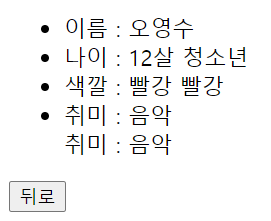

EL (Expression Language), 표현 언어
EL은 JSTL에 소개된 내용으로 JSP 2.0에 추가된 기능이며 JSP의 기본 문법을 보완하는 역할을 한다.
이제 <% %> <%= %> 를 사용하면 안된다.
(1) EL에서 제공하는 기능
- JSP의 네가지 기본 객체가 제공하는 영역의 속성 사용
- 집합 객체에 대한 접근 방법 제공
- 수치 연산, 관계 연산, 논리 연산자 제공
- 자바 클래스 메서드 호출 기능 제공
- ⭐표기법
- ${ expr }
(2) 표현언어에서 자바메소드를 사용
- 자바클래스 작성하고 메소드는 static 설정
- 태그라이브러리에 대한 설정정보를 담고 있는 tld(Tag Library Descriptor)파일을 작성
- web.xml에 tld파일을 사용할 수 있는 설정정보를 추가
- 자바클래스에 접근하는 jsp파일을 작성
예시 코드
- elTest
<%@ page language="java" contentType="text/html; charset=UTF-8" pageEncoding="UTF-8"%> <!DOCTYPE html> <html> <head> <meta charset="UTF-8"> <title>Insert title here</title> </head> <body> <table border ="1" width="50%"> <tr> <th width="50%">표헌식</th> <th>값</th> </tr> <tr align="center"> <td>\${ 25 + 3 }</td> <td>${ 25 + 3 }</td> </tr> <tr align="center"> <td>\${ 25 / 3 }</td> <td>${ 25 / 3 }</td> </tr> <tr align="center"> <td>\${ 25 div 3 }</td> <%-- <td>${ 25 div 3 }</td> --%> </tr> <tr align="center"> <td>\${ 25 % 3 }</td> <td>${ 25 % 3 }</td> </tr> <tr align="center"> <td>\${ 25 mod 3 }</td> <td>${ 25 mod 3 }</td> </tr> <tr align="center"> <td>\${ 25 < 3 }</td> <td>${ 25 < 3 }</td> </tr> <!-- > gt, < lt, >=ge, <=le, == eq, != ne --> <tr align="center"> <td>\${ 25 != 3 }</td> <td>${ 25 != 3 }</td> </tr> <tr align="center"> <td>\${ 25 ne 3 }</td> <td>${ 25 ne 3 }</td> </tr> <tr align="center"> <td>\${ header['host'] }</td> <td>${ header['host'] }</td> </tr> <tr align="center"> <td>\${ header.host }</td> <td>${ header.host }</td> </tr> </table> </body> </html>- \ 붙이면 텍스트 그대로 나옴
- elInput.jsp : form get으로 X, Y 넘김
<%@ page language="java" contentType="text/html; charset=UTF-8" pageEncoding="UTF-8"%> <!DOCTYPE html> <html> <head> <meta charset="UTF-8"> <title>Insert title here</title> </head> <body> <form method="get" action="elResult.jsp"> <table border = "1"> <tr> <th width="30">X</th> <td><input type="text" name="x" /></td> </tr> <tr> <th width="30">Y</th> <td><input type="text" name="y" /></td> </tr> <tr> <td colspan="2" align="center"> <button type="submit">계산</button> <button type="reset">취소</button> </td> </tr> </table> </form> </body> </html> - elResult.jsp
<%@ page language="java" contentType="text/html; charset=UTF-8" pageEncoding="UTF-8"%> <!DOCTYPE html> <html> <head> <meta charset="UTF-8"> <title>Insert title here</title> </head> <body> ${ param['x'] } + ${ param['y'] } = ${param['x'] + param['y'] } <br> ${ param['x'] } - ${ param['y'] } = ${param['x'] - param['y'] } <br> ${ param.x } * ${ param.y } = ${ param.x * param.y } <br> ${ param.x } / ${ param.y } = ${ param.x / param.y } <br> </body> </html>- 보는거와 같이 parameter를 받는데 2가지 방법이 존재.
- Compute.java
public class Compute { public static int sum(String x, String y) { return Integer.parseInt(x) + Integer.parseInt(y); } }- 자바클래스 작성하고 메소드는 static 설정
- elFunc.tld : 태그라이브러리에 대한 설정정보를 담고 있는 tld(Tag Library Descriptor)파일을 작성
<?xml version="1.0" encoding="UTF-8"?> <taglib xmlns="http://java.sun.com/xml/ns/j2ee" xmlns:xsi="http://www.w3.org/2001/XMLSchema-instance" xsi:schemaLocation="http://java.sun.com/xml/ns/j2ee/web-jsptaglibrary_2_0.xsd" version="2.0"> <description>EL에서 자바 메소드 실행</description> <tlib-version></tlib-version> <function> <description>x와 y의 합</description> <name>sum</name> <function-class>com.el.Compute</function-class> <function-signature>int sum(java.lang.String, java.lang.String)</function-signature> </function> <function> <description>x와 y의 차</description> <name>sub</name> <function-class>com.el.Compute</function-class> <function-signature>int sub(java.lang.String, java.lang.String)</function-signature> </function> </taglib> - webb.xml : web.xml에 tld파일을 사용할 수 있는 설정정보를 추가
<?xml version="1.0" encoding="UTF-8"?> <web-app xmlns:xsi="http://www.w3.org/2001/XMLSchema-instance" xmlns="http://xmlns.jcp.org/xml/ns/javaee" xsi:schemaLocation="http://xmlns.jcp.org/xml/ns/javaee http://xmlns.jcp.org/xml/ns/javaee/web-app_4_0.xsd" id="WebApp_ID" version="4.0"> <display-name>EL_JSTL</display-name> <jsp-config> <taglib> <taglib-uri>tld</taglib-uri> <taglib-location>/WEB-INF/elFunc.tld</taglib-location> </taglib> <taglib> <taglib-uri>tld2</taglib-uri> <taglib-location>/WEB-INF/elFunc2.tld</taglib-location> </taglib> </jsp-config> <welcome-file-list> <welcome-file>index.html</welcome-file> <welcome-file>index.jsp</welcome-file> <welcome-file>index.htm</welcome-file> <welcome-file>default.html</welcome-file> <welcome-file>default.jsp</welcome-file> <welcome-file>default.htm</welcome-file> </welcome-file-list> </web-app>
JSTL (Jsp Standard Tag Library)
2개의 jar파일이 필요
- jstl-1.2.jar
- standard-1.1.2.jar
pageScope → requestScope → sessionScope → applicationScope 순으로 호출
page - pageScope request - requestScope session - sessionScope application - applicationScope
메소드 호출시 접두사 set/get를 생략 할 수 있다 메소드명을 변수명처럼 사용 할 수 있다
- 제공되는 태그의 종류

예시 코드
- jstlInput.jsp
<%@ page contentType="text/html; charset=utf-8" %> <!DOCTYPE html> <html> <head> <meta charset="utf-8"> <title></title> </head> <body> <form method="post" action="jstlResult.jsp"> <table border="1" cellpadding="5" cellspacing="0"> <tr> <th width="70">이름</th> <td><input type="text" name="name"></td> </tr> <tr> <th width="70">나이</th> <td><input type="text" name="age"></td> </tr> <tr> <th width="70">색깔</th> <td> <select name="color" id="color" style="width: 100px;"> <optgroup label="색깔"> <option value="red">빨강</option> <option value="green">초록</option> <option value="blue">파랑</option> <option value="magenta">보라</option> <option value="cyan">하늘</option> </optgroup> </select> </td> </tr> <tr> <th>취미</th> <td> <input type="checkbox" name="hobby" id="hobby1" value="독서" /> <label for="hobby1">독서</label> <input type="checkbox" name="hobby" id="hobby2" value="영화" /> <label for="hobby2">영화</label> <input type="checkbox" name="hobby" id="hobby3" value="음악" /> <label for="hobby3">음악</label> <input type="checkbox" name="hobby" id="hobby4" value="게임" /> <label for="hobby4">게임</label> <input type="checkbox" name="hobby" id="hobby5" value="쇼핑" /> <label for="hobby5">쇼핑</label> </td> </tr> <tr> <td colspan="2" align="center"> <input type="submit" value="SEND"> <input type="reset" value="CANCEL"> </td> </tr> </table> </form> </body> </html> - jstlResult.jsp
<%@ page contentType="text/html; charset=utf-8" %> <%@ taglib prefix="c" uri="http://java.sun.com/jsp/jstl/core" %> <%@ taglib prefix="fmt" uri="http://java.sun.com/jsp/jstl/fmt" %> <!DOCTYPE html> <html> <head> <meta charset="utf-8"> <title></title> </head> <body> <fmt:requestEncoding value="UTF-8"/> <ul> <li>이름 : ${ param.name }</li> <li> 나이 : ${ param.age }살 // 나이에 따른 조건문 <c:if test="${ param.age >= 19 }">성인</c:if> <c:if test="${ param.age < 19 }">청소년</c:if> </li> <li>색깔 : // <c:if> 조건문을 사용하여 선택된 색깔에 따라 "빨강", "초록", "파랑", "보라", 또는 "하늘" <c:if test="${ param.color == 'red' }">빨강</c:if> <c:if test="${ param.color == 'green' }">초록</c:if> <c:if test="${ param.color == 'blue' }">파랑</c:if> <c:if test="${ param.color eq 'magenta' }">보라</c:if> <c:if test="${ param.color eq 'cyan' }">하늘</c:if> <c:choose> // <c:choose>와 <c:when> 태그를 사용해 색깔을 더 효율적으로 처리 <c:when test="${ param.color == 'red' }">빨강</c:when> <c:when test="${ param.color == 'green' }">초록</c:when> <c:when test="${ param.color == 'blue' }">파랑</c:when> <c:when test="${ param.color == 'magenta' }">보라</c:when> <c:otherwise>하늘</c:otherwise> </c:choose> </li> <li>취미 : // 다중 취미 처리 ${ paramValues['hobby'][0] } // c첫번째 ${ paramValues.hobby[1] } // 두번 <br> 취미 : // <c:forEach> 루프를 사용해 선택된 모든 취미를 반복하며 출력합니다. <c:forEach var="data" items="${ paramValues.hobby }"> ${ data } </c:forEach> </li> </ul> <input type="button" onclick="history.go(-1)" value="뒤로"> </body> </html>